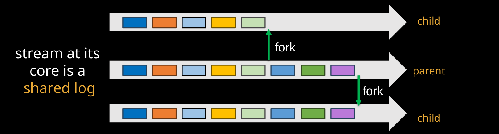
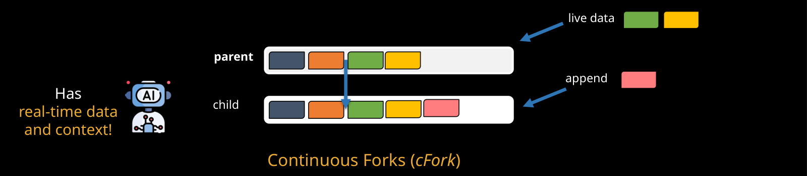
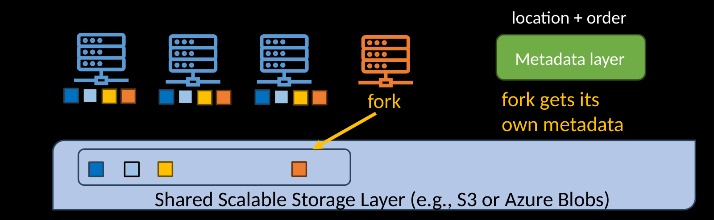
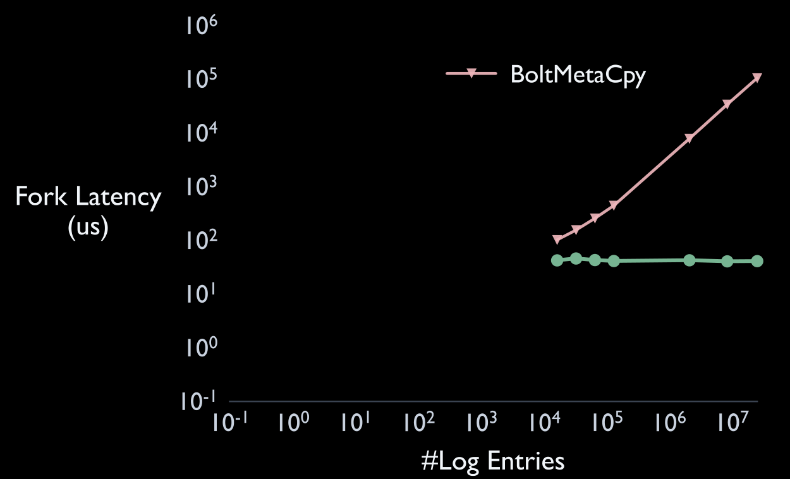
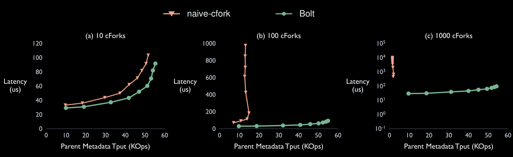
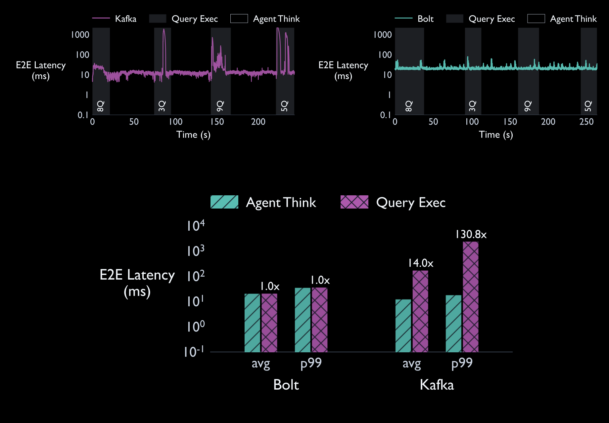
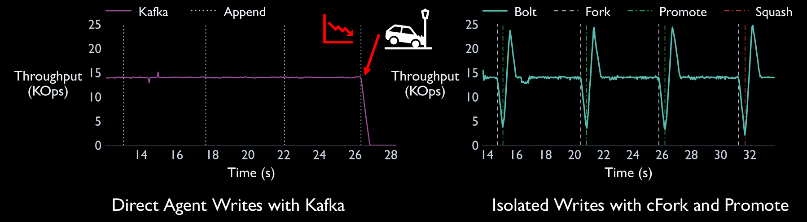

TL;DR. AI agents explore, retry, and sometimes write wrong data records. Sharing a production stream with them can slow down other applications or break downstream consumers. AgileLog introduces forks into the shared-log abstraction. Its continuous forks inherit live records from a parent while keeping an agent's writes private. Bolt, our implementation, builts atop diskless shared logs to make forks fast and cheap, and isolate performance.
1. Agents are a new kind of streaming client
Live data streams connect the systems that run an organization: orders, inventory updates, sensor readings, and much more. A shared log sits underneath these streams. Producers append records; the log orders them and makes them durable; downstream consumers read and process them. Shared-log designs such as CORFU establish this foundation. [1]
Now imagine asking an agent, “Show the trending products in a rolling five-minute window.” The agent might inspect available streams, sample records to infer their schemas, try a query, and refine it. Other agents might moderate incoming content, build a stream processor, or inject test transactions to check a fraud detector.
These are useful new clients, but their behavior differs from traditional programs that follow a fixed sequence of steps. Agents, unlike traditional programs, choose their next actions through LLM reasoning and invoke tools to carry them out. ReAct explores interleaving reasoning with actions, [2] while Toolformer shows how language models can learn to call external APIs. [3]
In Supporting Our AI Overlords: Redesigning Data Systems to be Agent-First, Liu et al. describe agentic speculation: agents explore possible solutions, probe data, and validate intermediate results at high volume. They argue that data systems should natively support this behavior. [4] Giurgiu and Nidd likewise describe the challenges posed by dynamic, context-driven agentic workloads. [5] For streaming infrastructure, this motivates four requirements.
- Performance interference. Exploratory reads and parallel investigations place done by agents load on the same servers that serve production applications. A latency-sensitive consumer should not be impacted by an agent's activity.
- Unsafe writes. An agent can append incorrect records. A downstream consumer may crash or worse silently compute the wrong result. Writes thus need a place to be staged and validated before they take effect on the original streams. Dolt's safe-agent-write workflow illustrates the same need for isolation and review before committing an agent's changes. [6]
- Exploratory writes. An agent may try several models or alternative actions and choose one. Those alternatives need to remain separate until a choice is made.
- Realistic testing. Agents can be smart testers. A fraud test is more useful when its synthetic transaction is interleaved with real transactions. A sandbox must preserve temporal context without exposing production consumers to test events.
Systems already expose streaming data to agents through tools (for example, StreamNative's MCP server. [7])
2. Rethinking the shared log
Current streaming systems already allow agents to read and write data, but they cannot fully support the way agents operate. They lack the mechanisms needed to isolate agentic workloads from traditional applications, validate writes before they take effect, safely explore alternative write paths, and provide sandboxes with real streaming data.
Our solution to these problems is to rethink the core storage abstraction underlying streams: the shared log. Producers and consumers interact through this abstraction, so giving it the right primitives lets us address these problems at the foundation of the streaming system.
We propose AgileLog, a shared log that offers forking as a first-class primitive. [8] A fork is a cheap, logically separate, performance-isolated child log that shares its parent's history. Like the parent, it can be read, appended to, and forked again. Traditional applications continue to use the parent log, while each agent works on its own fork.


This gives each problem a natural place to be handled. Agents can run expensive explorations on separate forks, write into isolated forks, explore alternatives in parallel, and use forks as sandboxes containing real data. A validation step can decide which proposed writes should become visible to the main stream.
Forking data systems is not a new idea. Neon and Dolt provide database branches for agents, [9] and Tigris offers forkable object-storage buckets. [10] Work on the agentic lakehouse also advocates isolated branches and validation for agent actions. [11] Earlier academic systems like OrpheusDB [12], Decibel [13], and Olive [14] also offer branching. The interesting question for streaming is what should happen after a fork is created.
3. Continuous Forks
A conventional fork shares history up to a point, then evolves independently. We call this a severed fork, or sFork. It is useful for analyzing a fixed range of past events. But an agent producing a live dashboard needs new records as they arrive. A severed fork would leave it working with an increasingly stale view.
AgileLog therefore also offers continuous forks, or cForks. A cFork inherits both the parent's history and its subsequent appends. The agent can append its own records to the child, but those records stay private to that child.


This is unidirectional write isolation: writes on the parent are visible to its cForks but not the other way around. In contrast to this, regular sForks offer bidirectional isolation. For a testing agent, it means a synthetic event can appear alongside real incoming events without ever entering the production log. For an analytics agent, it means an isolated workspace that continues to see current data.
The ordering matters too. A cFork's own appends are linearizably interleaved with inherited records, following the real-time ordering requirement of linearizability. [15] Concretely, if an append on the parent finishes before an append on the child begins, the child sees them in that order. It gets a coherent event sequence for testing or processing.
| Property | Severed fork | Continuous fork |
|---|---|---|
| Parent history | Inherited up to the fork point | Inherited up to the fork point |
| New parent records | Not inherited | Continuously inherited |
| Child writes | Private to the child | Private unless promoted |
| Example use | Analyze past events | Live analytics, testing, validated writes |
4. Validate, then promote
Test events should stay in their sandbox. Other agentic writes—such as restock events proposed by a supply-chain agent—are intended to become part of the actual stream. AgileLog supports that with promote().
The agent creates a promotable cFork and writes into it. An application then validates the fork, perhaps by running a stateful copy of the downstream consumer. If validation succeeds, the fork can be promoted to replace the parent's log contents. If it fails, squash() deletes the fork. Validation is supplied by the application; forking itself does not determine whether a proposed action is correct.
The same mechanism supports exploration. An agent can propose several alternatives on different promotable forks, compare their results, and promote one. Only the first successful promotion wins; the competing promotable forks are squashed.
AgileLog adds a few new calls to the regular shared-log interface. Alongside usual reads and appends, we now have the fork, promote, and squash calls.
interface AgileLog {
Position append(Record r);
List<Record> read(Position from, Position to);
AgileLog cFork(promotable = false);
AgileLog sFork(optional Position past);
bool promote();
void squash();
}Promote semantics. Promotion can change record positions. While a promotable cFork is pending, reads on the parent cannot advance beyond its fork point; append positions also cannot be returned beyond that point. Promotion or squashing releases these restrictions. Non-promotable cForks avoid imposing any restrictions. The paper's §4.1 explains the full semantics, including effects on descendants.
5. How Bolt makes forks practical
An abstraction is useful only if the system can implement it efficiently. Bolt needs forks to be quick to create and isolated in performance. Those goals pull in different directions.
Hosting a fork on its parent shared log's storage servers avoids a data copy (making fork creations instantaneous), but makes their workloads compete for resources. Copying everything to another cluster separates the workloads, but makes fork creation expensive, prohibitively so.
Bolt resolves this tension with a diskless shared-log architecture, building on the separation of compute and object storage seen in systems such as Aiven's diskless Kafka and WarpStream. [16] [17] Brokers write records to shared object storage like S3 rather than their own local disks. A fault-tolerant metadata layer tracks record order and storage locations. A fork can reference the same stored objects while its requests are served by a separate broker.


This architecture removes the need to copy data. But copying an index for a large log can still be slow, and eagerly updating every child on every parent append could make continuous forks expensive. Bolt adds several techniques:
- Zero-metadata-copy fork creation. A hierarchical log index lets a new fork refer to inherited metadata instead of copying the parent's entire index.
- Tail-only updates. For inherited records, Bolt can track the parent's progress without duplicating each record's metadata in every cFork.
- Lazy tail propagation. A lazy tail tree efficiently tracks progress across the fork hierarchy, resolving a child's current tail when it is needed.
The diskless architecture provides the foundation; these metadata techniques make it practical to have many continuous forks. The paper's system-design sections describe the indexing, ordering, and propagation mechanisms in detail. The lead author, Shreesha, used some clever tricks in the implementation to make the above techniques work well.
6. What happens in the experiments?
The experiments here highlight fork creation, the effect of many forks on a parent, and two applications using real LLM-powered agents. The paper has a more detailed set of experiments (§6 of the AgileLog paper). [8]
Fast forks, without copying metadata
Bolt creates forks in 10s of microseconds. The metadata-copying variant, BoltMetaCpy, gets slower as the log grows—reaching about 100 milliseconds for 25 million entries. These measurements assign forks to an already running broker; they do not include provisioning new compute.


Why thousands of continuous forks?
Thousands of cForks are a realistic deployment scenario. Imagine giving every developer in a large organization a live branch of the production system's streams. Each developer, or their coding agent, can build and test stream processors against incoming production data, while keeping experimental writes and test events isolated from production consumers. With thousands of developers, even one live branch per developer means thousands of cForks; parallel development and testing tasks can create more.
To examine this scale, we measure parent metadata throughput and latency with 10, 100, and 1,000 cForks. With just 10 cForks, the naive approach is still viable: naive-cfork (orange) sustains substantial throughput, although Bolt (green) achieves lower latency and higher throughput. But as the number of cForks grows to 100 and then 1,000, the naive approach collapses: its sustainable throughput drops sharply, and latency rises even at low request rates. Bolt continues to sustain tens of thousands of metadata operations per second at latencies in the tens of microseconds.
At this scale, efficient metadata updates are essential. Synchronously updating every child's index on each parent append puts too much work on the parent's critical path. Bolt's tail-only updates eliminate those per-child index updates, and lazy tail propagation avoids eagerly updating every child's tail. Together, these techniques let Bolt support many cForks without the collapse seen in the naive approach. These plots measure metadata-layer performance, rather than end-to-end log latency.


An analytics agent alongside a live workload
We built an ad-hoc analytics agent using Gemini-2.5-Pro to investigate anomalies in IoT sensor data. It reads records, issues SQL queries, and pursues multiple hypotheses. A traditional latency-sensitive workload monitors newly arriving readings alongside it. For a reproducible comparison, we capture one agent run and replay its trace on Kafka and Bolt.
With Kafka, both workloads contend at the shared broker. During the agent's query-execution phases, the traditional workload's mean latency increases 14× and its p99 latency increases about 130× relative to the agent's thinking phases. With Bolt, the agent analyzes the historical records on an sFork using a separate broker, and the traditional workload's latency remains stable.


A restocking agent that can make mistakes
The second example is a supply-chain agent that appends restock events based on historical demand. We inject a schema error into an agent-created event to simulate a mistake. When the event goes directly into Kafka's main stream, the downstream consumer crashes.
With Bolt, the agent writes into a promotable cFork first. A stateful copy of the downstream application validates the proposed stream. A bad fork is squashed, so its record never reaches the production consumer. Successful proposals are promoted.


This protection has a visible cost: the consumer pauses at the fork point while validation is pending. It resumes after promotion or squashing. The experiment demonstrates a way to contain an agent's mistake, with an explicit tradeoff between validation and immediate visibility.
7. Building data systems for agents
Agents are becoming users of data infrastructure. Their need to explore alternatives, test ideas, and act on live context should influence the abstractions that infrastructure offers—the broader case made by Supporting Our AI Overlords. [4]
AgileLog takes one step in that direction. Forking gives agents separate workspaces. Continuous forks keep those workspaces connected to the live stream. Promotion provides a controlled way to integrate validated writes. Bolt shows how shared storage and careful metadata design can make these operations practical.
For the full design and evaluation, read AgileLog: A Forkable Shared Log for Agents on Data Streams, appearing at SOSP '26, and explore the research prototype.
References
The AgileLog paper and related work on agents, streaming, and data versioning. Numbers follow the order of citation in this article.
- Mahesh Balakrishnan, Dahlia Malkhi, Vijayan Prabhakaran, Ted Wobber, Michael Wei, and John D. Davis. CORFU: A Shared Log Design for Flash Clusters. NSDI, 2012. ↩
- Shunyu Yao et al. ReAct: Synergizing Reasoning and Acting in Language Models. ICLR, 2023. ↩
- Timo Schick et al. Toolformer: Language Models Can Teach Themselves to Use Tools. NeurIPS, 2023. ↩
- Shu Liu et al. Supporting Our AI Overlords: Redesigning Data Systems to be Agent-First. CIDR, 2026. ↩
- Ioana Giurgiu and Michael E. Nidd. Supporting Dynamic Agentic Workloads: How Data and Agents Interact. arXiv:2512.09548, 2025. ↩
- James Leng. Safe Agent Writes in Workbench Demo. DoltHub, 2025. ↩
- StreamNative. Introducing the StreamNative MCP Server: Connecting Streaming Data to AI Agents. ↩
- Shreesha G. Bhat, Tony Hong, Michael Noguera, Aishwarya Ganesan, and Ramnatthan Alagappan. AgileLog: A Forkable Shared Log for Agents on Data Streams. SOSP, 2026. ↩
- Neon. Build Versioning / Checkpoints for your Agent. ↩
- Tigris. Fork Buckets Like You Fork Code. ↩
- Jacopo Tagliabue and Ciro Greco. Safe, Untrusted, “Proof-Carrying” AI Agents: Toward the Agentic Lakehouse. arXiv:2510.09567, 2025. ↩
- Silu Huang, Liqi Xu, Jialin Liu, Aaron J. Elmore, and Aditya G. Parameswaran. OrpheusDB: Bolt-on Versioning for Relational Databases. Proceedings of the VLDB Endowment 10(10), 2017. ↩
- Michael Maddox, David Goehring, Aaron J. Elmore, Samuel Madden, Aditya Parameswaran, and Amol Deshpande. Decibel: The Relational Dataset Branching System. Proceedings of the VLDB Endowment 9(9), 2016. ↩
- Marcos K. Aguilera, Susan Spence, and Alistair Veitch. Olive: Distributed Point-in-Time Branching Storage for Real Systems. NSDI, 2006. ↩
- Maurice P. Herlihy and Jeannette M. Wing. Linearizability: A Correctness Condition for Concurrent Objects. ACM Transactions on Programming Languages and Systems 12(3), 1990. ↩
- Aiven. Diskless topics for Apache Kafka. ↩
- WarpStream. The Diskless, Kafka Compatible Data Streaming Platform. ↩